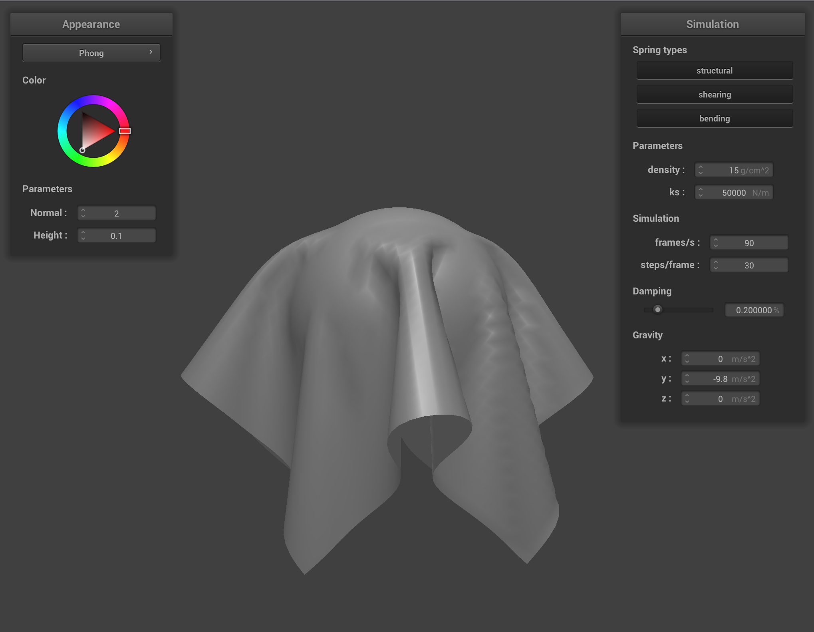

Overview and Challenges Encountered
In this project, we implemented various functions to help us render different kinds of cloths. First, we implemented basic physics for the cloth, including modelling the cloth
as a grid of point masses and springs, implementing forces for these springs as well as for gravity to make our cloth fall in a natural way. We then implemented collision, both between
the cloth and external primitives (spheres and planes), as well as collisions between the cloth and itself. Finally, we implemented different shading techniques to render the cloth in a realistic-looking way without
using ray tracing.
Overall, our primary challenges with this project were external to the project content. We had the challenge of having projects for three other technical project classes due in the days before this project's deadline,
one of which involved being in Cory for 2-4 hours almost every day for a week and a half, and then 21 hours in a single day on the final day (the day before the 184 project deadline :( ) (We recommend only taking 106b if you really love robotics research). Probably due to sleeping very few hours before
spending a full day doing this project, we had many issues with debugging (having xcode set to the wrong folder, defining "h" as a variable in OpenGL then not realizing why it was erroring), but overall the actual content-related implementation
of this project went smoothly.
The two of us pair programmed for the full project.
Part 1: Masses and Springs
Implementation Summary and Approach
In order to create the grid of point masses in row-major order, we specified indices (i) between 0 and num_width_points * num_height_points, defining
our row and column indices by i / num_width_points and i % num_width_points respectively. We calculate the appropriate width and height displacements from (0,0) by assuming evenly
spaced points across the defined number of points (so num_*_points - 1 number of spaces between the points), and use these width and height displacements to create our position vector appropriately
([width displacement, 1, height displacement] for horizontal and [width displacement, height displacement, (rand() % 100) / 100.0) * .002 - .001] for vertical).
After creating our point, we iterate through the vector of pinned coordinates and set the pinned boolean appropriately.
Now that we have all of our point masses, creating springs is simple. We iterate through our list of point masses that we just populated, and for each mass add the appropriate springs. This is as in the spec: we have two structural springs connecting directly to the left and above,
shearing springs diagonally upper-left and upper-right, and bending springs two to the left and two up. For each of these springs, we check that the neighboring point in question exists before accessing it to create the spring. Indices are calculated using the same row-major math as above.
What the wireframe looks like (1) without any shearing constraints, (2) with only shearing constraints, and (3) with all constraints
|
Pinned2 wireframe at rest
|
|
Wireframe without any shearing constraints
|
 Wireframe with only shearing constraints
Wireframe with only shearing constraints
|
|
Wireframe with all constraints
|
Due to the pattern we use in populating the springs, each point is connected to all four adjacent points by structural springs, all four two-away adjacent points by bending springs, and all four diagonally adjacent points by shearing springs.
Part 2: Simulation Via Numerical Integration:
Implementation Summary and Approach
Calculating total force per point
First, we must calculate the sum of the external forces. Since this is the same for all points, we simply iterate through all of our external accelerations, add those acceleratios * mass to our total force, then set a copy of this total force to be the force
for all of the points by iterating through the points.
Then, we iterate through all of our springs to add the spring's forces to each of the connected point's total force. To do this, we calculate a force magnitude for the spring, defined as ks * ((pm_a.position - pm_b.position).norm() - spring rest length).
Then, we multiply this force magnitude by a unit vector from point a to point b (b-a), and apply this force to point a. We apply the negative (* (a-b)) of this force to point b. By "apply" here, we mean we add this force to the existing force vector of the point.
Verlet integration
For verlet integration, we use the equation x(t+dt) = x(t) + (1 - d) * (x(t) - x(t-dt) + a * dt^2. Here, x(t) is our pm.position, x(t-dt) is our pm.last_position, and x(t + dt) is our new position that we want to store.
d is the damping constant divided by 100, and dt is delta_t, which was defined for us at the top of the method. Since F = ma, a is our total force divided by mass. We move our current position to last_position an set our current position to our new position.
Position update constraint
Since we want to make sure the springs aren't deformed over 10%, we check for each spring if this is the case by seeing if the distance between the two points is greater than 1.1 * the springs natural length. If this is the case,
then we define a correction distance to be the distance between the two points minus the spring's natural length. If one of the points is pinned, we multiply this correction distance by a unit vector from the other point towards the pinned point, and add this vector to the non-pinned point. If neither point is pinned,
we do the same thing for both points but with half of the correction distance.
Describe the effects of changing the spring constant ks; how does the cloth behave from start to rest with a very low ks? A high ks?
Increasing the spring constant ks makes the cloth much more stiff, and decreasing it makes it more malleable and stretchy. With a very low ks, the cloth acts like a thin silk and sags, and with a very high ks it acts like thicker canvas-like material.
This makes sense because a higher ks means there are more forces preventing the points from deforming away/towards each other too much.
|
The effect of having a low spring constant
|
|
The effect of having a high spring constant
|
We can see in pinned2 that with a low ks, the cloth sags a lot from the two pinned points and falls with lots of ripples in the cloth. With a high ks, the cloth bends a lot less from the pinned points and falls in a stiffer, smoother way.
What about density?
A higher density means the masses of each point mass is higher, which means the same acceleration corresponds to a higher force on the springs. Thus, the effects of increasing density are similar to the effects of having a lower ks: with a lower ks, the points
deform more easily because the springs require less energy to deform, and with a higher density each acceleration of the points corresponds to a higher force exerted on the springs to deform the springs.
|
The effect of having low density
|
 The effect of having high density
The effect of having high density
|
We can see that the low density image looks similar to the high ks image, and the high density image looks similar to the low ks image.
What about damping?
A higher damping corresponds to a greater loss of energy in our movement, which in our code is modeled as scaling down the velocity * t term in our displacement equation. This means that if some points have a high velocity in some direction, with high damping we will take this momentum less into account.
In our animation, the low damping cloth falls quickly and bounces around a lot: we can see lots of ripples in the cloth and we see the cloth bounce back and forth a lot as the springs oscillate more aggressively. With higher damping, our cloth falls more slowly, and there is no bouncing as it falls.
|
The effect of having low damping: cloth is mid-bounce
|
 The effect of having high damping
The effect of having high damping
|
Show us a screenshot of your shaded cloth from scene/pinned4.json in its final resting state!
|
The resting state of the shaded cloth.
|
Part 3: Handling Collision with Other Objects:
Implementation Summary and Approach
First, we handle collisions with spheres. To see if a point is inside a sphere, we check if the distance between the point and the origin is less than the radius of the sphere. If this is not the case, then we just return.
If the point is inside the sphere, we can find the tangent point by taking a unit vector from the origin to the point, and multiplying that by the radius of the sphere. The origin plus this vector gives us the coordinates of
the tangent point where the point should have intersected with the sphere. Once we have the tangent point, we define a vector between our last position and this tangent point (tangent - last_position), and scale this vector down by friction ( * (1 - f)). We set
our position of the point to be the last position plus this friction-scaled correction vector.
Next, we handle collisions with planes. These planes are defined as a point and a normal, and we want to check if our last point and current point are on opposite sides of the plane, we want to update the current point to be some surface offset above the plane ("above" being on the side of the last position).
To check if the point has intersected with the plane, we define vectors v1 and v2 as the vectors from the plane point to last_position and from the plane point to position, respectively. We know that the normal is at a less than 90 degree angle with one of these vectors, and a greater than 90 degree angle with the other vector if the points are on
opposite sides of the plane. Thus, we see if dot(normal, v1) * dot(normal, v2) is negative: if it is, the dot products have opposite signs and we know we have an intersection.
Once we know we have an intersection, we must find the tangent point. First, we define a direction vector (direction_vec) as the unit vector in the direction from last_position to position. We know that our tangent point is at some scalar * direction_vec + last_position, so we just
need to find the scalar. With some vector geometry and using the properties of dot products, we can find that this scalar is (dot((this->point - pm.last_position), plane_norm) / dot(plane_norm, direction_vec), and we subtract from this our surface offset to get our final scalar. Finally, now that we have the tangent point,
we apply the same friction math as in the sphere to get our final offset from last_position, and we update our point position appropriately.
In our simulate method, we try to collide every collision object with every point.
Show us screenshots of your shaded cloth from scene/sphere.json in its final resting state on the sphere using the default ks = 5000 as well as with ks = 500 and ks = 50000. Describe the differences in the results.
|
The resting state of the shaded cloth from scene/sphere.json in its final resting state with ks=5000.
|
 The resting state of the shaded cloth from scene/sphere.json in its final resting state with ks=500.
The resting state of the shaded cloth from scene/sphere.json in its final resting state with ks=500.
|
|

The resting state of the shaded cloth from scene/sphere.json in its final resting state with ks=50000.
|
We can see that, similarly to our different ks results in the pinned scenes, the cloth is a lot stiffer and doesn't wrinkle as much/fall down as far in the high ks cloth. With a lower ks, the cloth becomes a lot limper and softer, and hangs lower from the sides of the sphere.
Show us a screenshot of your shaded cloth lying peacefully at rest on the plane. If you haven't by now, feel free to express your colorful creativity with the cloth! (You will need to complete the shaders portion first to show custom colors.)
 The cloth lying peacefully at rest on the plane
The cloth lying peacefully at rest on the plane
|
Part 4: Handling Self-collisions:
Implementation Summary and Approach
Hashing position
For our position hash, we first need to find the x y and z indices of the 3d spatial box that our point falls into. We have our dimensions per box defined in the spec, as
w = 3 * width / num_width_points, h = 3 * height / num_height_points, and t = max(w, h). To find our x position index, we take floor(pos.x / w): for y and z, we do the same with the corresponding position and height/thickness variables.
To hash our final x y and z indices into a unique hash, we return x * 10^6 + y * 10^3 + z.
Building spatial map
To build our spatial map, we simply populate a hash map using this defined hash function of all of our points. To do this, for each point, we find the hashed value. Then, we check if this value is in the map as a vector; if it is, we add it to the end of the vector, and if not then we make a vector and add it to the end of the vector.
Self collision
Now that we have our points hashed into 3D boxes, we can check for each point if it collides with the rest of the points in its hash bin. We iterate through all of our point masses, and for each point,
find the vector of points in the same box by finding its hash value and accessing the vector from the hash map. Then, for each of the points in that vector (that is not the point we are currently checking), we check to see that
the distance between our point and the candidate point is greater than 2 * thickness apart. If this is true, we move on; if this is not true, we must apply a correction vector to our point.
We store our total correction vector for each point outside of the loop of candidates. If we find that a candidate is too close, we find our desired position as (point - candidate).unit() * 2 * thickness + candidate. Then, our correction vector is desired - point, and we add this to our
total correction vector. Once we are done iterating through cadidates, we divide our correction vector by the number of corrections we made on this point, and divide again by simulation_steps. Then, we add our correction vector to the position of our point to get our new point position.
Show us at least 3 screenshots that document how your cloth falls and folds on itself, starting with an early, initial self-collision and ending with the cloth at a more restful state (even if it is still slightly bouncy on the ground).
|
Cloth early in the falling process
|
|
Cloth midway in the falling process
|
 Cloth near the end of the falling process
Cloth near the end of the falling process
|
We can see in the first image that the cloth is beginning to fold on itself, and has collided with itself a bit at the end. In the second image, we can more clearly see the folds in the cloth at the bottom, and
can see that there is a thick pile of folds rather than the cloth clipping into itself. After the cloth has fallen, it then unfolds itself and adjusts for a bit until it reaches something similar to this final fallen position,
where the cloth is more flat on the table and has some folds but also has unfolded itself to some degree.
Vary the density as well as ks and describe with words and screenshots how they affect the behavior of the cloth as it falls on itself.
 How cloth falls with low density
How cloth falls with low density
|
|
How cloth falls with high density
|
 How cloth falls with low ks
How cloth falls with low ks
|
|
How cloth falls with high ks
|
For the lower density cloth, it folds on itself less frequently as it falls, and the final resting state is flatter. For the higher density cloth, it folds on itself very aggressively and many times as it falls, and creates a very bumpy and vibrating mass at the end.
For low ks, the cloth behaves similarly to the high density; for high ks, the cloth behaves similarly to the low density.
Part 5: Shaders
Implementation Summary and Approach
Diffuse Shading
For diffuse shading, we set some luminance L to a constant (1, for our purposes) multiplied by I/r^2 * max(0,n dot l), where I is our light intensity, r is our distance from the
vertex to the light, n is the normal of the vertex, and l is the vector from the vertex to the light. Essentially, this makes it so that with maximum intensity appropriate to our vertex being lit directly by the light source at distance r,
we vary our luminance based on the angle that the light hits our vertex at.
Blinn-Phuong shading
This is described more in detail later, before the screenshots. For our coefficients, our ambient coefficient is 0.1, our diffuse coefficient is 0.5, and our specular coefficient is 0.6.
Texture Mapping
All we do is access the texture map at the given v_uv, and populate the out_color with this color.
Displacement and Bump Mapping
For both displacement and bump mapping, our h function returns the red channel of the color of the texture at a given point (u,v). To calculate our normal, we follow the spec:
We set our matrix TBN to = [t, b, n], where b = cross(n, t), and t and n are our given unit tangent and normal vectors in model space. We define our dU as dU = (h(vec2(v_uv.x + 1.0/width, v_uv.y)) - h(v_uv)) * u_height_scaling * u_normal_scaling, and dV as the same but varying along the y axis of our texture by 1/height instead.
Then, our normal in the local space is [-dU, -dV, 1], and our new normal is TBN * local space normal. This normal is then used as the normal in Phong shading, to give our desired look.
Environment-Mapped Reflections
For this part, all we really need to do is get our ray towards the light source in order to sample our texture, wi. With wo defined as vertex position - camera position, our wi is defined as wo - 2 * dot(wo, v_normal.xyz) * v_normal.xyz, which is what we get when wo reflected across the normal. We then use the built in texture sampling method to get the texture for this direction ray.
Explain in your own words what is a shader program and how vertex and fragment shaders work together to create lighting and material effects.
A shader program runs on GPU to process information about vertices and fragments and produce a 4d vector (r, g, b, a) for the color on some part of an object in your scene.
Vertex shaders work in the space of 3D vertices, and the information from these then get passed into the fragment shaders, which work in screen space, are executed once per fragment, and give us the color of a surface at the screen sample.
Explain the Blinn-Phong shading model in your own words. Show a screenshot of your Blinn-Phong shader outputting only the ambient component, a screen shot only outputting the diffuse component, a screen shot only outputting the specular component, and one using the entire Blinn-Phong model.
The Blinn-Phong shading model has three main components, which are all weighted added together. One component is ambient light, which is simply a constant light value (for our purposes, we used the same light intensity for everything).
The second component is diffuse lighting, which has the same value as the diffuse shader: it's a model of light assuming all light that hits a point is diffused equally in all directions, so the light intensity just varies based on angle to the light source.
The last component is the specular component, which produces some shininess. The specular component has the same intensity/r^2 part, multiplied by max(0, dot(n, h)^p), where h is a unit vector bisecting the vectors to our camera and to our light source. p is a hyperparameter: the higher the p, the more intense
(shiny) the specular component is.
|
Blinn Phong shader outputting only the ambient component.
|
 Blinn Phong shader outputting only the diffuse component.
Blinn Phong shader outputting only the diffuse component.
|
 Blinn Phong shader outputting only the specular component.
Blinn Phong shader outputting only the specular component.
|
|
Blinn Phong shader using the entire model.
|
Show a screenshot of your texture mapping shader using your own custom texture by modifying the textures in /textures/.
|
Texture mapping shader using custom texture
|
Bump and displacement mapping with texture 4
|
Screenshot of bump mapping on the cloth
|
|
Screenshot of bump mapping on the sphere
|
|
Screenshot of displacement mapping on the sphere
|
Bump mapping changes the normals that we use in calculating our texture to reflect what the object would look like if (based on some texture map) some parts were higher. The new normal, used in conjunction with some other shading (in our code, Phong shading,) makes it
so that the colors on the object reflect the bumps. Displacement shading, in addition to doing this, actually changes the positions of the vertices to, so from the side we can see the profiles of the bumps. We have to do this in the vertex shader for this reason, as the points are displaced
in 3D space.
 Screenshot of bump mapping on the sphere with mesh coarseness parameters of -o 16 -a 16
Screenshot of bump mapping on the sphere with mesh coarseness parameters of -o 16 -a 16
|
 Screenshot of bump mapping on the sphere with mesh coarseness parameters of -o 128 -a 128
Screenshot of bump mapping on the sphere with mesh coarseness parameters of -o 128 -a 128
|
 Screenshot of displacement mapping on the sphere with mesh coarseness parameters of -o 16 -a 16
Screenshot of displacement mapping on the sphere with mesh coarseness parameters of -o 16 -a 16
|
|
Screenshot of displacement mapping on the sphere with mesh coarseness parameters of -o 128 -a 128
|
With finer parameters, the displacement and bump mapping are more true to the actual texture. With coarser parameters, the displacement (or perceived displacement) of the surface of the sphere is much more
Show a screenshot of your mirror shader on the cloth and on the sphere.
 Cloth shaded with mirror shader
Cloth shaded with mirror shader
|
 Sphere shaded with mirror shader
Sphere shaded with mirror shader
|